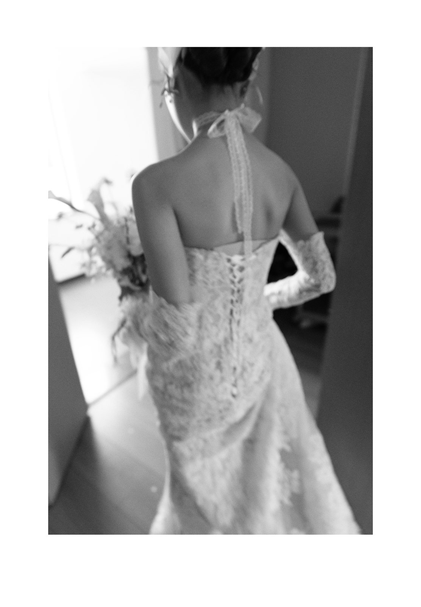
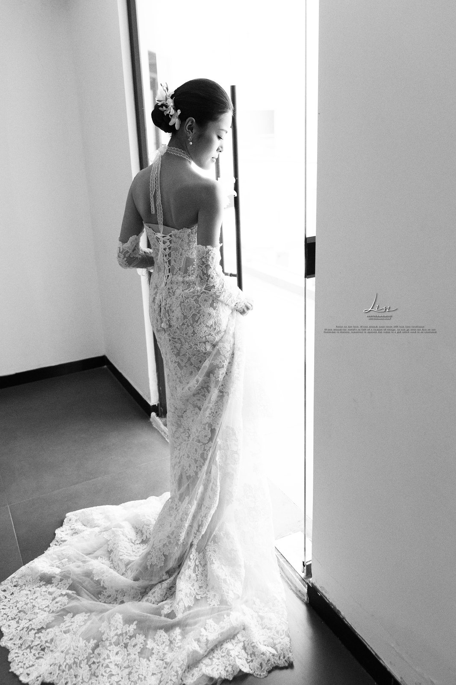
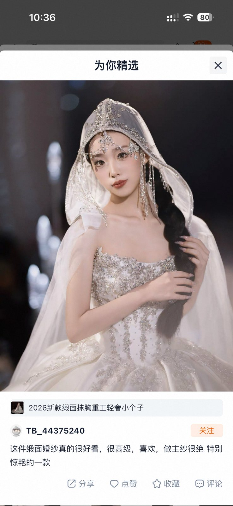
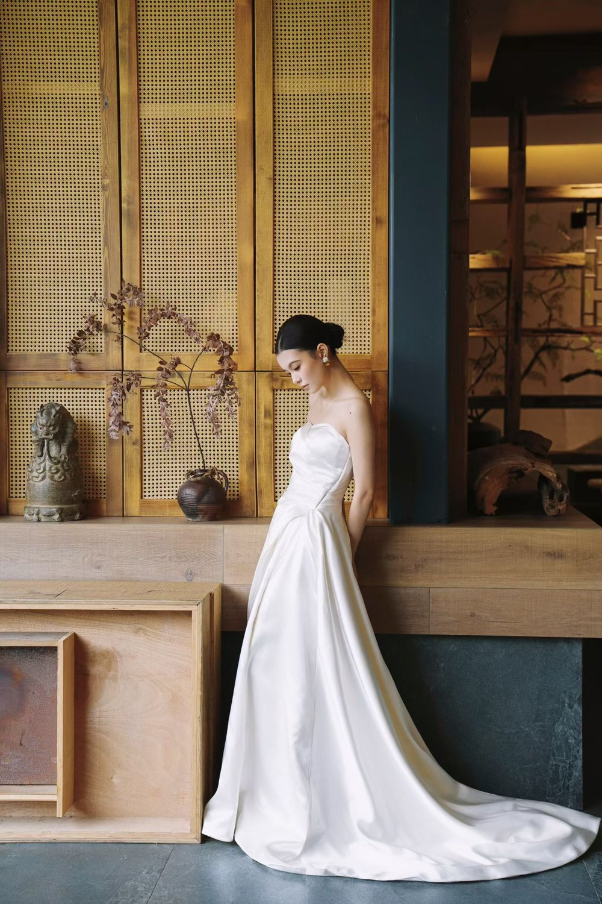

玻璃花园厅
自然采光、水晶吊饰和白绿花艺，适合清透花园感婚礼。
Service Guide
如果你还没有完整方案，可以先从最关心的一项开始。禧见文化会根据婚期、人数、预算和风格，把婚礼堂、定制婚礼、礼服妆造、影像主持统一规划。
Wedding Halls
主营婚礼堂空间与宴会场景，兼顾仪式感、宾客动线、灯光结构和影像出片效果。

以立体花艺、法式穹顶和暖金灯光构成主视觉，适合大宴会、高定婚礼与仪式宴会一体化呈现。
自然采光、水晶吊饰和白绿花艺，适合清透花园感婚礼。

用灯幕和拱形动线营造入场记忆点，适合迎宾与影像取景。

从舞台结构到光影测试，提前把镜头里的最终效果校准好。
Service Details
只需要其中一项，可以直接预约；需要一站式婚礼，我们会先帮你确认优先级，再把场地、方案、礼服妆造、影像和主持排进同一张执行表。
Case Gallery
把场景、人物、细节与影像动线放在一起呈现，方便新人快速判断自己的婚礼会落在哪一种气质里。

黑白基底与水晶灯幕形成强记忆点，适合庄重、璀璨、镜面质感的仪式表达。

以粉色花瀑、草坪和自然树影构建轻盈户外仪式。
灯幕和拱形通道形成入场记忆点，也适合迎宾与影像取景。
正式开始前校准舞台色温、投影纹理和镜头明暗，让成片更稳定。

甜品、花艺、布艺和小物件统一色调，形成可拍照的宾客停留区。
适合偏自然、明亮、清透的新娘风格，与白绿色系妆造更合拍。
Bridal Styling
我们会结合婚礼堂空间、舞台色温、通道反光和摄影机位，判断主纱、头纱、拖尾与妆面是否协调，让礼服在现场和镜头里都成立。
预约试纱与妆造



Wedding Journal
把新人常问的场地、预算、试纱、跟妆、影像和主持问题整理成指南，方便你在咨询前先建立判断标准。
把婚礼堂选择拆成可判断的标准，避免只看装修风格，忽略宾客体验和当天执行。
从场地、设计、花艺舞美、影像主持到人员执行，理解钱花在什么地方。
礼服、妆面、发型和场景要统一判断，避免当天风格割裂。
主持节奏、机位、灯光和新人动线需要提前统一，而不是婚礼当天临场磨合。
Service Process
先确认场地与预算，再推进设计、人员、物料与当天流程，减少新人反复沟通的压力。
确认婚期、人数、预算、风格偏好与核心服务需求。
匹配婚礼堂空间，输出主题方向、动线和视觉方案。
落实礼服、妆造、摄影摄像、主持及婚礼执行团队。
完成彩排、物料复核、当天控场和仪式全流程执行。
Consultation
你可以先留下婚期、人数和最关心的服务板块。顾问会优先围绕婚礼堂档期与整体预算，给出可落地的沟通方向。